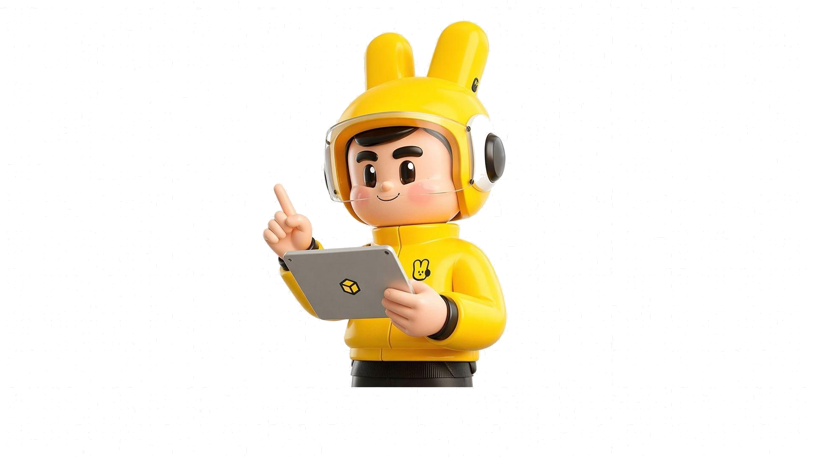

账号概览
--
美团装备研究所
小红书号：63048899491 | IP属地：北京
探索不一样的骑手装备
认准唯一官号 其他均不是所长哦
认准唯一官号 其他均不是所长哦
8
关注
5.1万
粉丝
6.1万
获赞与收藏
81
笔记
热度趋势（近24小时）
7,856
7,856
峰值
5,234
均值
2,100
最低
5,400
当前
Top10 热点榜单
昨日数据
- 加载中...
每日10:00自动更新
我的待办
+ 提交待办
- 暂无待办，点击上方提交待办
历史生成记录
更多
- 暂无生成记录，生成内容后自动记录
物料素材制作
素材信息
添加
图片生成描述
重新生成
生成预览
确认描述后点击生成素材
内容生成
AI 驱动 · 不聊价格 · 不硬广
相关话题：
- 1加载中...
每日10:00自动更新
话题方向0/50
生成标题 （点击选择）
- 1 输入话题后生成标题

AI 内容助手
输入话题方向后生成创意标题
内容分析
关注点
输入话题方向后，AI 将围绕该话题提炼核心看点：读者最感兴趣的痛点、最想要的功能点、最关心的场景对比。例如「骑手的一天」话题，关注点可能集中在：日常装备真实体验、高强度工作下的装备选择、与同行交流的心得等。这些看点将决定正文的切入角度和内容权重。
第一视角场景
选择标题后，AI 将以「所长」第一人称视角构建真实骑手生活场景：等红灯时暴晒、爬楼梯赶时间、深夜收工的疲惫、被同行搭话的趣味瞬间。场景有画面感、有细节、有情绪共鸣，让读者仿佛身临其境。不是广告话术，而是真实骑手日常。
结尾互动
正文生成后，AI 会设计一个自然有趣的评论区互动话题：可以是投票（"你们觉得NFC开锁实用还是噱头？"）、提问（"夏天跑单你们最怕什么？我先说——等红灯暴晒"）、晒物（"评论区交作业：你的箱子用了多久了？还活着吗？"）。互动设计的目标是提升评论率，而非生硬求赞。
完整正文
📌 示例预览（选择标题并生成正文后，此处将显示实际内容）
骑手的一天｜看完沉默了
早上六点半出门，我还觉得今天挺凉快的。结果中午爬了六楼送餐，后背全湿透了。等红灯的时候太阳直射，脖子火辣辣的，以前穿棉T恤黏在身上那个难受啊。
说的是真实经历。那次印象挺深——是去年七月最热的一个周五，我在朝阳区跑午高峰。系统连续派了三个六楼的单子，最后一单是老旧小区，没有电梯。我拎着两大袋奶茶往上爬，楼道里又闷又窄，还飘着一股消毒水味。爬到四楼的时候腿已经软了，扶着栏杆喘口气，听见楼上住户在喊"外卖到了吗"，我只能咬牙继续往上冲。
好不容易送到，开门的是个小姑娘，接过奶茶说了声"谢谢叔叔"就关门了。我站在楼道里愣了两秒，低头看看自己，衣服湿得能拧出水，裤脚还沾着泥点。那一下突然觉得挺心酸的，但紧接着系统又弹出新单子，只好转身下楼继续跑。
今天试了新到的速干衣，仿棉面料摸着像普通T恤，但汗湿后背居然不会黏！同样是爬六楼，送完午高峰回家，衣服已经干了，也没啥汗味。最惊喜的是腋下和后背的网眼设计，以前闷出一身汗的感觉明显少了。
下午在国贸附近等红灯，被三个同行问衣服哪买的，我说装备研究所的，他们表情就跟我免费送的一样😂其中一个兄弟还非要摸一下面料，说"这不就是普通T恤吗？"我说你穿一天就知道了。
傍晚收工路过便利店，店员看我衣服没湿透，问我是不是今天单子少。我说单子没少，是衣服换对了。她听完掏出手机记了名字，说给她老公也整一件——她老公也是跑众包的。
凌晨收工的时候算了算，以前一个月光T恤就得洗坏两三件，现在这件速干衣洗了十几次了，版型还在，也没起球。以前跑单一天换两件T恤，今天一件就搞定了。
你们夏天跑单最怕什么？我先说——老旧小区没电梯的六楼。评论区说说你们的崩溃瞬间！
常用模板快捷
管理
小红书笔记模板
种草图文
口播脚本模板
短视频脚本
标题钩子模板
吸睛标题
物料海报模板
宣传海报